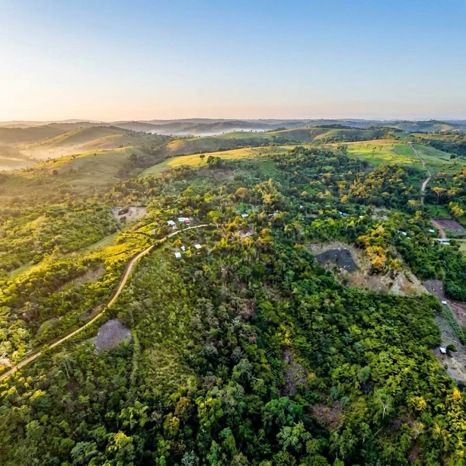

PEN549,500 3.89 ha

Invierte en un fundo listo para disfrutar con agua propia, luz instalada y abundantes árboles frutales, en un entorno natural privilegiado con acceso vehicular al pie del camino. Los terrenos con agua propia y servicios instalados son cada vez más escasos en el entorno de Tarapoto. Este fundo combina naturaleza, infraestructura y una ubicación estratégica a solo 5 minutos de Yanashpa Village y a 25 minutos del centro de Tarapoto. Incluye * Terreno de 3.89 ha * Ojo de agua propio para mayor independencia * Luz con medidor independiente * Camino principal con acceso todo el año * Acceso vehicul